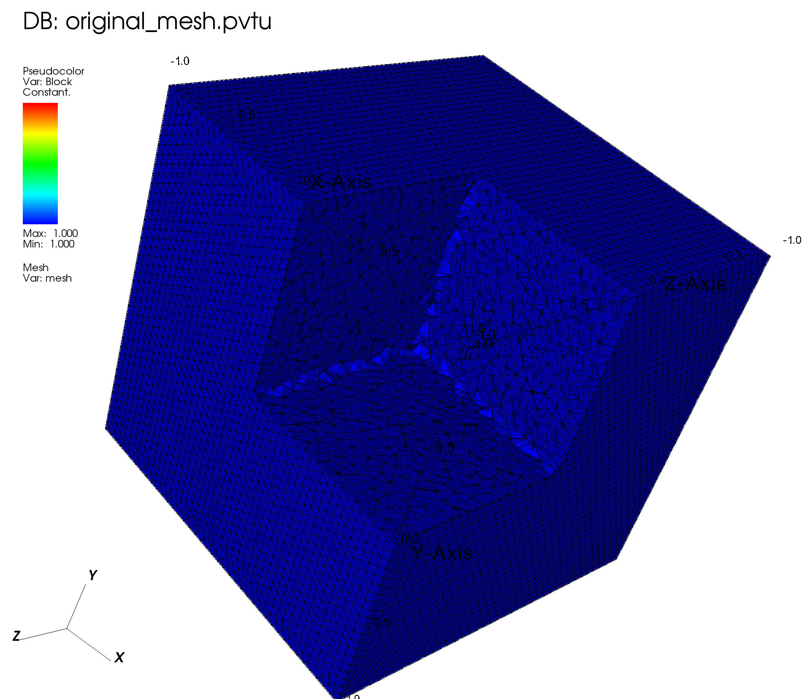
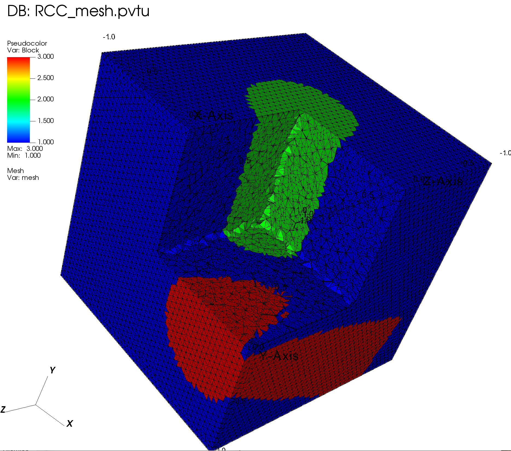
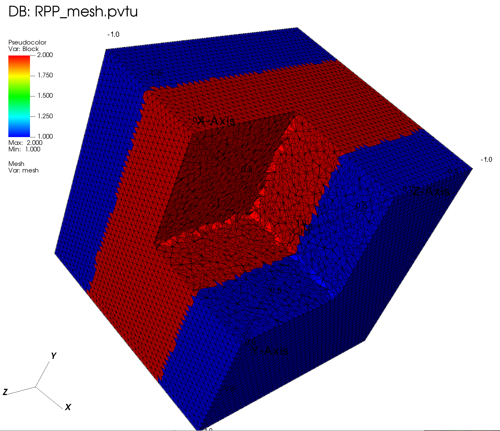
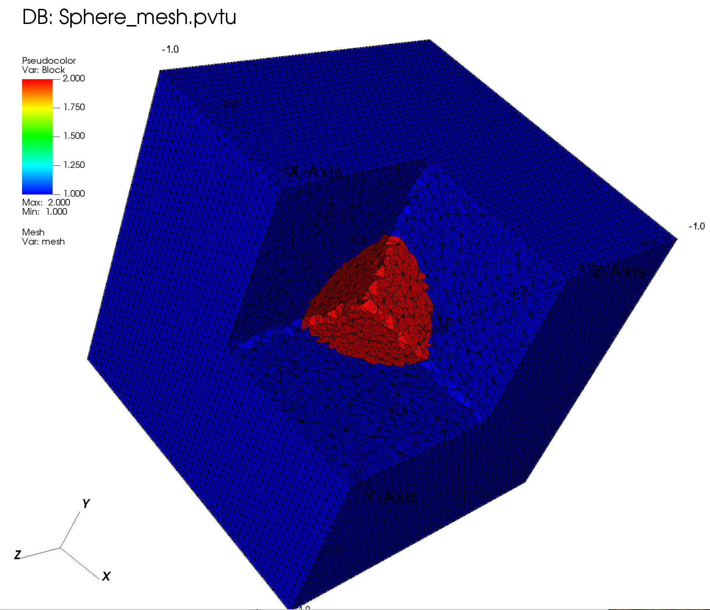
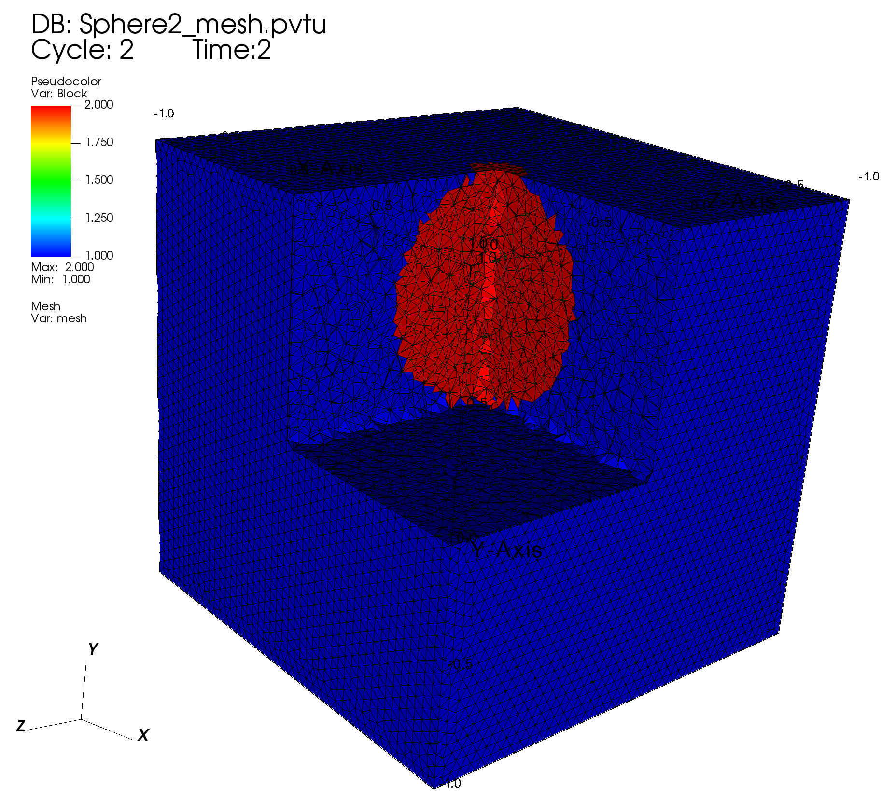
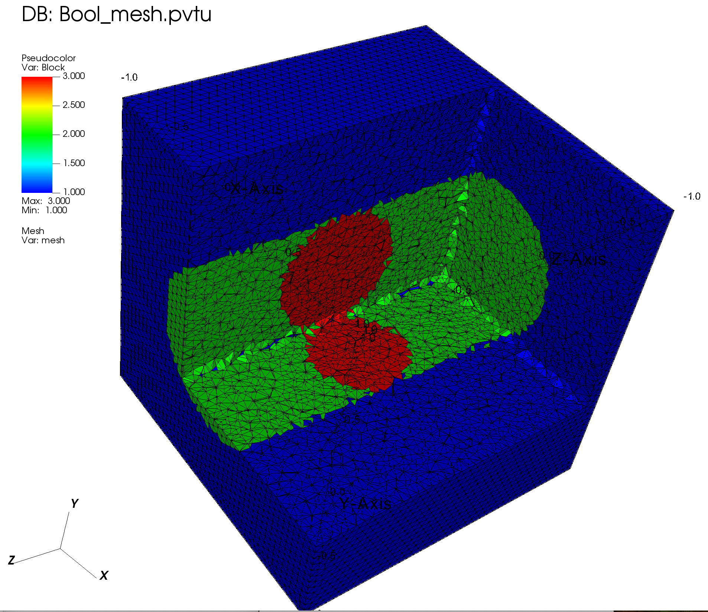
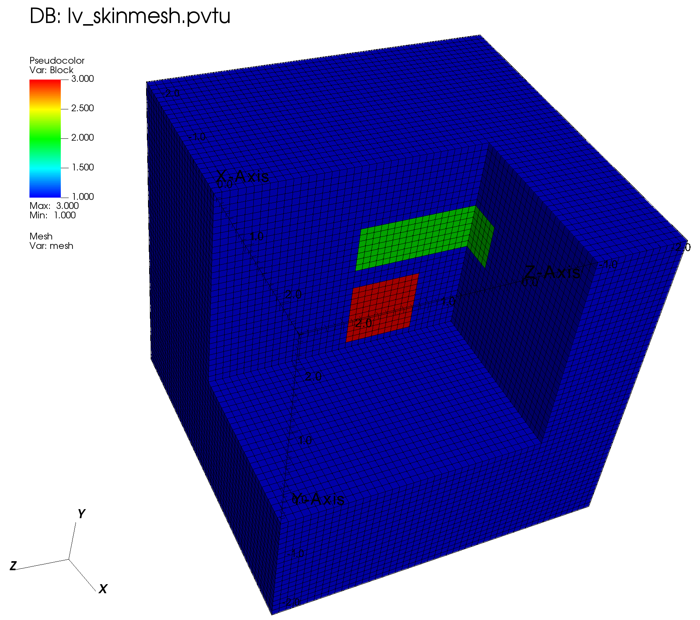

4.2. Using Logical Volumes
We read a 3D tetrahedral mesh with uniform blockID. Then we use several logical volumes to modify the blockIDs for some portion of the original mesh.
To run the code, simply type: jupyter nbconvert --to python --execute <basename>.ipynb.
To convert it to a python file (named <basename>.py), simply type: jupyter nbconvert --to python <basename>.ipynb
To run the python file from the terminal, using N processes, simply type: mpiexec -n <N> python <basename>.py
[ ]:
import os
import sys
import numpy as np
from mpi4py import MPI
sys.path.append("../..")
from pyopensn.mesh import FromFileMeshGenerator, OrthogonalMeshGenerator, SurfaceMesh
from pyopensn.logvol import RCCLogicalVolume, RPPLogicalVolume, SphereLogicalVolume, BooleanLogicalVolume, SurfaceMeshLogicalVolume
from pyopensn.context import UseColor, Finalize
from pyopensn.math import Vector3
UseColor(False)
4.2.1. Load Original Mesh
We use FromFileMeshGenerator to read the mesh, and then export it to a VTU file.
[ ]:
meshgen = FromFileMeshGenerator(filename="simple_cube_fine.msh")
grid = meshgen.Execute()
# Export
grid.ExportToPVTU("original_mesh")
4.2.2. Visualization
The resulting mesh and material layout is shown below:

4.2.3. Right-Circular Cylinder as Logical Volumes
We use two RCCs to change the blockID in two locations in the domain.
[ ]:
# reset to uniform material layout (useful when running the notebook)
grid.SetUniformBlockID(1)
# first RCC
lv1 = RCCLogicalVolume(r=0.4, x0=0., y0=-0.5, z0=0., vx=0., vy=1.5, vz=0.)
grid.SetBlockIDFromLogicalVolume(lv1, 2, True)
# second RCC
lv2 = RCCLogicalVolume(
r=0.4,
x0=0.9,
y0=-0.8,
z0=-0.7,
vx=-0.5,
vy=1.0,
vz=3.0,
)
grid.SetBlockIDFromLogicalVolume(lv2, 3, True)
# Export
grid.ExportToPVTU("RCC_mesh")
4.2.3.1. Visualization

4.2.4. Rectangular Parallelepiped as Logical Volumes
[ ]:
# reset to uniform material layout (useful when running the notebook)
grid.SetUniformBlockID(1)
# RPP
lv3 = RPPLogicalVolume(xmin=-0.5, xmax=0.5, infy=True, infz=True)
grid.SetBlockIDFromLogicalVolume(lv3, 2, True)
# Export
grid.ExportToPVTU("RPP_mesh")
4.2.4.1. Visualization

4.2.5. Sphere as Logical Volumes
[ ]:
# reset to uniform material layout (useful when running the notebook)
grid.SetUniformBlockID(1)
# Sphere
lv4 = SphereLogicalVolume(r=0.5, x=0., y=0., z=0.)
grid.SetBlockIDFromLogicalVolume(lv4, 2, True)
# Export
grid.ExportToPVTU("Sphere_mesh")
4.2.5.1. Visualization

4.2.6. Using a Python Function instead of Logical Volumes
[ ]:
# reset to uniform material layout (useful when running the notebook)
grid.SetUniformBlockID(1)
# Python function describing a sphere (material 2)
def MatIDFunction1(pt, cur_id):
y0 = 0.5
if np.sqrt(pt.x * pt.x + (pt.y - y0)**2 + pt.z * pt.z) < 0.5:
return 2
return cur_id
# Assign block ID 2 to lv using Python function
grid.SetBlockIDFromFunction(MatIDFunction1)
# Export
grid.ExportToPVTU("Sphere2_mesh")
4.2.6.1. Visualization

4.2.7. Boolean Operations on Logical Volumes
[ ]:
# reset to uniform material layout (useful when running the notebook)
grid.SetUniformBlockID(1)
# Create logical volume lv1 as an analytical sphere
lv1 = SphereLogicalVolume(r=0.5, x=0.0, y=0.0, z=0.0)
# Create logical volume lv2 as an analytical rcc
lv2 = RCCLogicalVolume(
r=0.5,
x0=0.,
y0=0.,
z0=-1.5,
vx=0.0,
vy=0.0,
vz=3.0,
)
# Create logical volume lv3 as boolean: True if cell is in lv2 and False if in lv1
lv3 = BooleanLogicalVolume(parts=[
{"op": True, "lv": lv2},
{"op": False, "lv": lv1}
])
# Assign block ID 2 to all cells in lv3 which is the part of lv2 that is not in lv1
grid.SetBlockIDFromLogicalVolume(lv3, 2, True)
# Assign block ID 3 to all cells in lv1
grid.SetBlockIDFromLogicalVolume(lv1, 3, True)
# Export
grid.ExportToPVTU("Bool_mesh")
4.2.7.1. Visualization

4.2.8. Using a Skinmesh as Logical Volume
A skin mesh is the surface mesh of the outer boundary (“skin”) of a 3D volume mesh.
[ ]:
# Set up orthogonal 3D geometry
nodes = []
N = 50
L = 5.0
xmin = -L / 2
dx = L / N
for i in range(N + 1):
nodes.append(xmin + i * dx)
meshgen = OrthogonalMeshGenerator(node_sets=[nodes, nodes, nodes])
grid = meshgen.Execute()
# Assign blockID of 1 to the whole domain
grid.SetUniformBlockID(1)
# Create a logical volume as an analytical RPP
lv = RPPLogicalVolume(
xmin=-0.5,
xmax=0.5,
ymin=0.8,
ymax=1.5,
zmin=-1.5,
zmax=0.5,
)
# Assign mat ID 2 to lv of RPP
grid.SetBlockIDFromLogicalVolume(lv, 2, True)
# Create a logical volume as the interior of a skin mesh
surfmesh = SurfaceMesh()
surfmesh.ImportFromOBJFile("./cube_with_normals.obj", False, Vector3(0, 0, 0))
lv_skinmesh = SurfaceMeshLogicalVolume(surface_mesh=surfmesh)
# Assign mat ID 3 to lv of skin mesh
grid.SetBlockIDFromLogicalVolume(lv_skinmesh, 3, True)
# Export to vtk
grid.ExportToPVTU("lv_skinmesh")
4.2.8.1. Visualization

4.2.9. Finalize (for Jupyter Notebook only)
In Python script mode, PyOpenSn automatically handles environment termination. However, this automatic finalization does not occur when running in a Jupyter notebook, so explicit finalization of the environment at the end of the notebook is required. Do not call the finalization in Python script mode, or in console mode.
Note that PyOpenSn’s finalization must be called before MPI’s finalization.
[ ]:
from IPython import get_ipython
def finalize_env():
Finalize()
MPI.Finalize()
ipython_instance = get_ipython()
if ipython_instance is not None:
ipython_instance.events.register("post_execute", finalize_env)